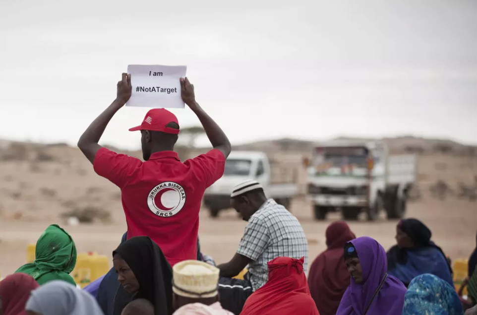
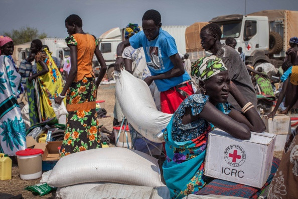
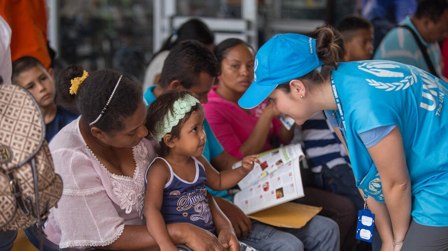
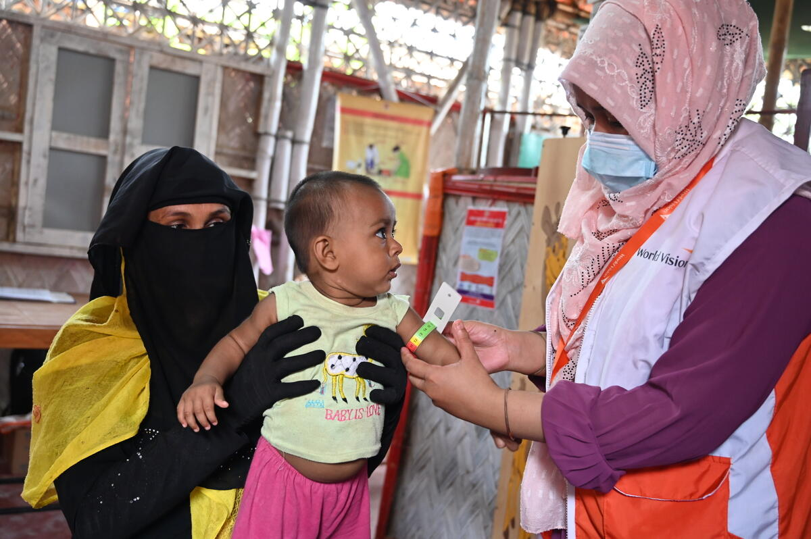

Humanitarian staff distribute food in Tukaraq, Somalia as part of the #NotATarget awareness campaign.
Source:
The New Humanitarian (2021)

Residents in Minkammen, South Sudan receive food and essential supplies—including soap, mats, and buckets—from a recent International Committee of the Red Cross (ICRC) distribution.
Source:
IBTimes (2016)

A UNHCR worker meets with a Colombian mother in rural Venezuela to discuss support options like medical care, legal help, and humanitarian aid.
Source:
UNHCR (2017)

A World Vision worker conducts a nutrition assessment for a child
Source:
World Vision
Prev
Next